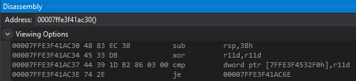
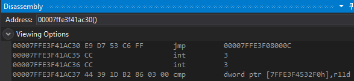
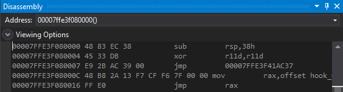

# x64 Inline Hook - E9 to Trampoline within 2GB Range
x64 inline hooking of MessageBoxA by finding a trampoiline within a 2GB range,
using an E9 relative jump to get to it,
and jmp RAX to jump to our hook function.
The E9 jmp relative instruction is limited to a + or - 2GB range.
On 64bit machines, it's possible for the address of our trampoline to be more than 2GB away.
To solve this, we have to search for free memory within a 2gb range.
If successful, we can then allocate trampoline space and from there jump anywhere we want.
Refer here for a function to find free memory within a 2gb range:
Useful > Find Memory within 2gb## MessageBoxA Demo
Here's MessageBoxA before the hook:
And here it's been hooked.
I've replaced the first 5 bytes with E9 jump relative to my trampoline.
This works because my trampoline is within a 2GB range.
Here's my trampoline:
• The first 7 bytes are the prologue code from MessageBoxA,
• At address
7 is a jump to the original MessageBoxA + 7
• At address
C is a jump to my hook function - hooked_MessageBoxA
To jump to a 64bit address, it moves the address of hooked_MessageBoxA and jumps to what's in rax
## Code
In this code I've also used a disassembler to grab the length of the instructions I'm overwriting
and fill out any extra instructions with NOPs.
I've used HDE - which can be found in Minhook's source:
https://github.com/TsudaKageyu/minhook/tree/master/src/hde/*
x64 inline hooking of MessageBoxA
using a E9 jmp relative to reach a trampoline within +/- 2gb range.
A disassembler - HDE - is used so that bytes aren't the original function
aren't spliced and can be filled with NOPs.
With such a short hook (an E9 is 5 bytes)
we shouldn't hit any weird relative offsets / instructions in the original function
and our hook should work for most functions.
CHECK FOR EACH FUNCTION YOU HOOK.
The only dependency is that we're able to find
a trampoline space within 2gb range
and there's enough space for the trampoline (~25 bytes)
*/
#define _CRT_SECURE_NO_WARNING
#include <stdio.h>
#include <Windows.h>
#include "hde64.h"
int(__stdcall* orig_MessageBoxA)(HWND hWnd, LPCSTR lpText, LPCSTR lpCaption, UINT uType);
int __stdcall hook_MessageBoxA(HWND hWnd, LPCSTR lpText, LPCSTR lpCaption, UINT uType)
{
printf("MessageBoxA intercepted! \n");
printf("\t text: %s \n\t caption: %s \n\t type: %d \n", lpText, lpCaption, uType);
return orig_MessageBoxA(hWnd, lpText, lpCaption, uType);
}
void* FindMemoryWithin2GBRange(void* base)
{
SYSTEM_INFO sys_info = { 0 };
MEMORY_BASIC_INFORMATION mbi = { 0 };
size_t ret = 0;
UINT_PTR mem_address = (UINT_PTR)base;
UINT_PTR min_addr = mem_address - 0x7FFFFFFF; // + 2gb
UINT_PTR max_addr = mem_address + 0x7FFFFFFF; // - 2gb
/*
Grab allocation granularity (boundary on which memory aligns, usually 0x10000 - 65kb)
and calculate start address to search from by rounding down to the nearest allocation granularity.
*/
GetSystemInfo(&sys_info);
mem_address -= mem_address % sys_info.dwAllocationGranularity;
// Search for memory below
do
{
ret = VirtualQuery((void*)mem_address, &mbi, sizeof(mbi));
if (ret == 0) // if VirtualQuery failed
break;
if (mbi.State == MEM_FREE)
return (void*)mem_address;
/*
AllocationBase points to the base address of the range of pages queried by VirtualAlloc.
e.g.
You VirtualQuery an address in the middle of User32.dll - 0x7ffecbcfacf0
mbi.AllocationBase will be 0x7ffecbc80000 (the address of User32.dll)
Subtract the dwAllocationGranulairty to find the next memory page to query.
*/
mem_address = (UINT_PTR)mbi.AllocationBase - sys_info.dwAllocationGranularity;
} while (mem_address >= min_addr);
// Search for memory above
mem_address -= mem_address % sys_info.dwAllocationGranularity; // Reset start address
do
{
ret = VirtualQuery((void*)mem_address, &mbi, sizeof(mbi));
if (ret == 0) // if VirtualQuery failed
break;
if (mbi.State == MEM_FREE)
return (void*)mem_address;
// Calculate end of queried memory region
mem_address = (UINT_PTR)mbi.BaseAddress + mbi.RegionSize;
// Add allocation granularity (-1 in case memory regions are spaced 0x10000 bytes (size of dwAllocationGranularity) between eachother)
mem_address += sys_info.dwAllocationGranularity - 1;
// Round down to allocation granularity
mem_address -= mem_address % sys_info.dwAllocationGranularity;
} while (mem_address >= min_addr);
return NULL;
}
/*
Hook a function.
Parameters:
char* function - name of the function to hook
char* dll - name of the DLL where the function resides
void* detour - the function to detour to
void** p_orig - address of the pointer to the original function
Return:
Number of bytes overwritten in the function. Use this value for Unhook().
*/
int Hook64(char* function, char* dll, void* detour, void** p_orig)
{
// Grab address of target function
void* orig_func = GetProcAddress(LoadLibraryA(dll), function);
void* free_memory = FindMemoryWithin2GBRange(orig_func);
if (free_memory == NULL)
{
printf("[-] failed to find memory within 2gb range of: 0x%p \n", orig_func);
return 0;
}
/*
Disassemble instructions @ function until we have enough space for hook.
Fill any extra bytes within an instruction with NOPs so that we don't splice instructions.
e.g.
Need 5 bytes of space for hook. 3 instructions @ function total 7 bytes.
Fill the last 2 bytes with NOPs so that we don't have junk instructions after our hook.
*/
BOOL disassemble = TRUE;
void* instruction = orig_func;
int hook_size = 0;
do
{
hde64s hs = { 0 };
unsigned int instruction_size = hde64_disasm(instruction, &hs);
if (hs.flags & F_ERROR) // Failed to disassemble
return 0;
// Quit if we've disassembled enough instructions for our hook
hook_size += instruction_size;
if (hook_size >= 5)
break;
// Advance to next instruction
(UINT_PTR)instruction += instruction_size;
} while (disassemble == TRUE);
/*
Allocate trampoline space within +/- 2gb range.
Trampoline size needs 17 extra bytes:
- 5 for E9 jump relative back to original function
- 12 for jump to hook code
*/
int trampoline_size = hook_size + 17;
void* trampoline = VirtualAlloc(free_memory, trampoline_size, MEM_COMMIT | MEM_RESERVE, PAGE_EXECUTE_READWRITE);
/*
Construct trampoline. The mov rax; jmp rax will tarnish whatever's in RAX :/
0 ?? <function prologue code>
10 E9 00 00 00 00 jmp 00007FFE3F41AC37 ; Relative jump to (original function + disassembled_bytes)
15 48 B8 F3 12 E5 FD F6 7F 00 00 mov rax,offset hook_MessageBoxA ; Move address of detour into RAX
23 FF E0 jmp rax ; jmp RAX
*/
unsigned char trampoline_data[17] = {
0xE9, 0x00, 0x00, 0x00, 0x00,
0x48, 0xB8, 0x00, 0x00, 0x00, 0x00, 0x00, 0x00, 0x00, 0x00,
0xFF, 0xE0
};
DWORD jmp_origfunction = (DWORD)(((DWORD64)orig_func + hook_size) - ((DWORD64)trampoline + hook_size + 5));
memcpy(trampoline_data + 1, &jmp_origfunction, 4);
memcpy(trampoline_data + 7, &detour, 8);
// Write data to trampoline
memcpy(trampoline, orig_func, hook_size); // Prologue from original function
memcpy((void*)((DWORD64)trampoline + hook_size), trampoline_data, sizeof(trampoline_data)); // Jumps to original function and detour function
/*
Construct hook. 5 bytes long.
Remaining bytes filled with NOPs:
0 E9 00 00 00 00 jmp relative
*/
DWORD jmp_trampoline = (DWORD)(((DWORD64)trampoline + hook_size + 5) - ((DWORD64)orig_func + 5));
unsigned char* hook = malloc(hook_size);
memset(hook, 0xCC, hook_size);
memcpy(hook, "\xE9", 1); // jmp relative
memcpy(hook + 1, &jmp_trampoline, 4); // <trampoline_address>
// Write hook to function
DWORD old_protect = 0;
VirtualProtect(orig_func, hook_size, PAGE_READWRITE, &old_protect);
memcpy(orig_func, hook, hook_size);
VirtualProtect(orig_func, disassemble, old_protect, &old_protect);
/*
Set pointer to original function to the start of the trampoline.
When orig_Function() is called, it will execute the prologue @ trampoline
and follow the jump to the original hooked function.
*/
*p_orig = trampoline;
FlushInstructionCache(GetCurrentProcess(), orig_func, hook_size);
return hook_size;
}
/*
Unhook a function.
Parameters:
char* function - name of the function to unhook
char* dll - name of the DLL where the function resides
int bytes - number of bytes ovewritten @ function (value returned by Hook())
void* trampoline - pointer to the address of the trampoline space
*/
BOOL Unhook64(char* function, char* dll, int bytes, void* trampoline)
{
BOOL ok = FALSE;
DWORD old_protect = 0;
/*
Grab address of original function,
make it writable,
and restore its first N bytes by copying them from the trampoline space.
*/
void* orig_func = GetProcAddress(LoadLibraryA(dll), function);
VirtualProtect(orig_func, bytes, PAGE_READWRITE, &old_protect);
memcpy(orig_func, trampoline, bytes);
VirtualProtect(orig_func, bytes, old_protect, &old_protect);
/*
Free trampoline space
and flush instruction cache at original function.
*/
VirtualFree(trampoline, 0, MEM_RELEASE);
FlushInstructionCache(GetCurrentProcess(), orig_func, bytes);
return ok;
}
int main(void)
{
MessageBoxA(NULL, "I think I should greet myself", "Hmm...", MB_OK);
int size = Hook64("MessageBoxA", "User32.dll", &hook_MessageBoxA, (void*)&orig_MessageBoxA);
MessageBoxA(NULL, "Hello", "Hi #1", MB_OK);
MessageBoxA(NULL, "Hello good sir!", "Hi #2", MB_OK);
Unhook64("MessageBoxA", "User32.dll", size, (void*)orig_MessageBoxA);
MessageBoxA(NULL, "Did he hear me ok?", "Hmm...", MB_OK);
return 0;
}